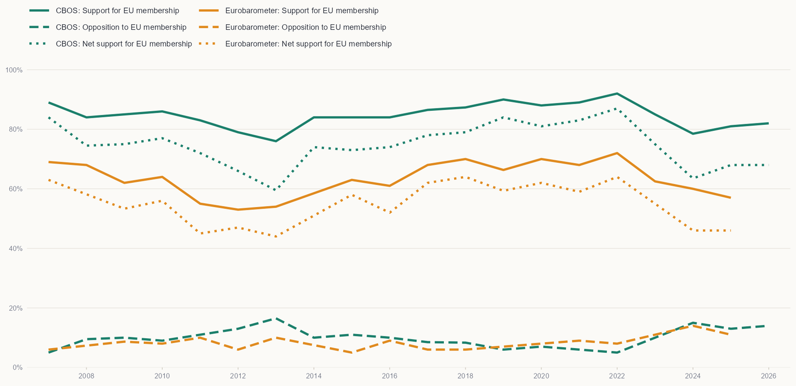
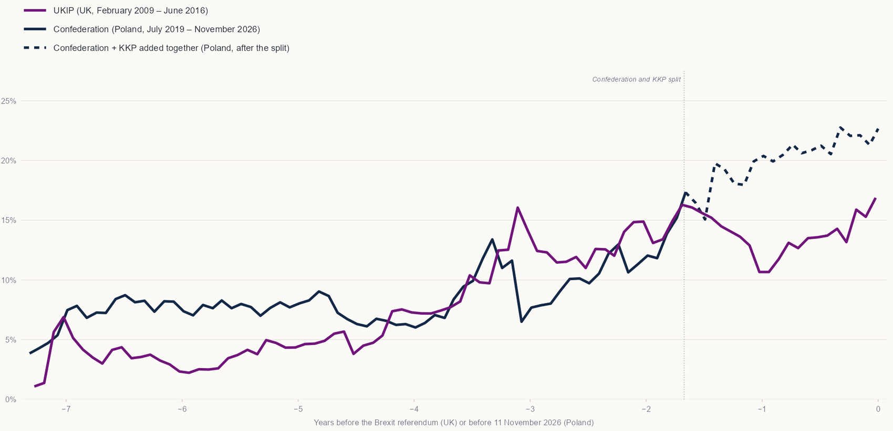
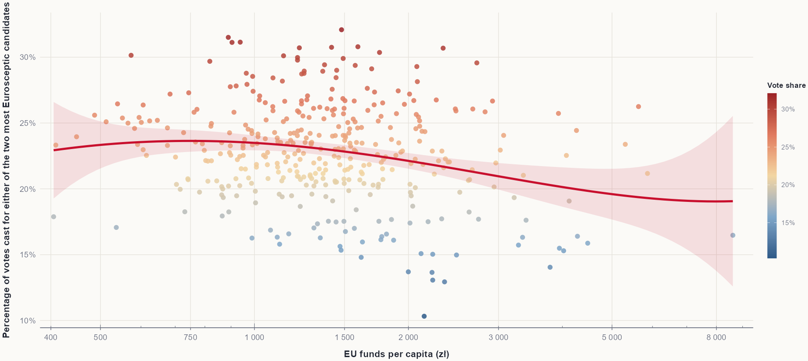
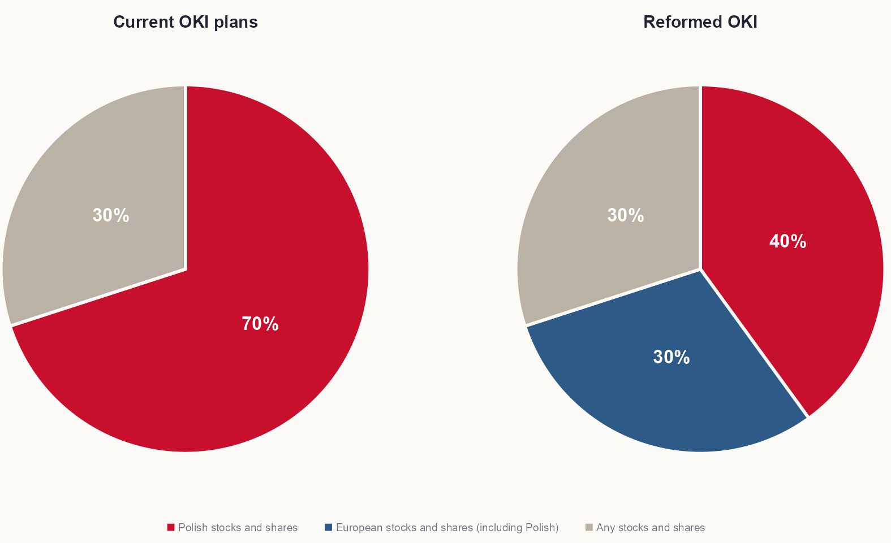

01
Understand the Polish debate
Why anti-European narratives resonate, how moderate and radical positions differ, and the six issues that feed them.
Explore the debateLessons from Brexit for a stronger Poland in Europe
What can Britain’s experience teach Poland about sovereignty, political disengagement and the cost of turning away from Europe? This report sets out a positive vision of a Poland that is stronger, richer and more sovereign through effective cooperation.

Figures are reported in the study and refer to different polls and analyses; they are not directly comparable measures.
Anti-European narratives have gained political traction in Poland, often by presenting European cooperation as a threat to national sovereignty. The report argues that this is a false choice: cooperation can increase Poland’s practical ability to protect its citizens, shape decisions and pursue its interests.
Why anti-European narratives resonate, how moderate and radical positions differ, and the six issues that feed them.
Explore the debateHow British Euroscepticism evolved from the 1970s to 2016, and what followed the UK’s departure in 2020.
Explore BrexitThe political and economic warnings from the UK experience that Polish policymakers should take seriously.
Read the lessonsEleven practical proposals — three tactical and eight policy recommendations — for a stronger Poland in Europe.
See the proposalsAcademic work, books, government and think-tank reports, and news coverage from Poland, the UK and elsewhere in Europe.
Academic and polling datasets, notably CBOS, Eurobarometer and the Chapel Hill Expert Survey, using methods described in the report.
Consultations with Polish, British and European think-tank, academic and political experts.
Poland is stronger and more sovereign in Europe — but Europe must become a place where ordinary Poles can see their own home, interests and identity.
The report’s central proposition
The report distinguishes between opposition to further integration while remaining inside the EU, and opposition that aims to take Poland out of the Union altogether. The two currents differ in their end goal, even when they sometimes use similar language.
Critics of international frameworks argue that common rules can constrain a country’s ability to respond to its own circumstances and priorities.
Supporters argue that shared action can deliver economies of scale, stronger bargaining power, wider markets and greater capacity to achieve common goals.
Moderate anti-Europeans want Poland to remain an EU member, but favour reversing parts of European integration and returning more decisions to national governments. Their preferred model is often described as a “Europe of Nations”.
Radical anti-Europeanism goes further than seeking a different balance of powers inside the Union. Its goal is Poland’s formal departure from the EU and a more fundamental reorientation of the country’s relationship with Europe.
The report identifies six recurring sources of anti-European sentiment in Polish politics. Sovereignty underlies many of them, but it is expressed through different policy and political concerns.
Claims that EU institutions suffer from a democratic deficit or undermine democracy and the rule of law in Poland.
Opposition to the idea that the EU promotes or imposes a migration policy considered harmful to Poland.
Criticism of EU climate and environmental measures as poorly suited to Poland’s economy and energy mix.
Claims of political favouritism towards particular leaders and of preferential treatment for Western European states, especially Germany.
Concern that the EU and Western Europe favour an excessively progressive social outlook rather than a “Europe of Nations”.
For some, Europe’s perceived weakness towards Russia fuels criticism; Russian influence also feeds radical, pro-Russian anti-Europeanism.


The report follows British Euroscepticism from the UK’s entry into the European Economic Community to its departure from the EU. It highlights how the political focus shifted over time — and why the consequences matter for Poland.
The United Kingdom enters the European Economic Community in January.
Voters decide whether the UK should remain in the EEC.
A second referendum produces a vote to leave the European Union.
The UK formally leaves the EU on 31 January.
The report notes that the UK’s European question shaped two referendums and contributed to the downfall of four prime ministers.
The report argues that the UK’s experience is a warning against assuming that economic arguments alone can defeat an exit campaign — or that leaving the EU will resolve the concerns that fuel Euroscepticism.
The report’s comparison suggests that Brexit had a negative economic effect on the UK, while Poland’s gains from EU membership make the potential cost of Polexit considerably greater.
Brexit voters were more persuaded by arguments about controlling laws, borders and immigration than by the economic case for leaving.
Populist parties helped drive the UK’s Leave campaign and have become prominent vehicles for anti-European narratives in Poland.
An exit process can become politically possible even when the governing parties do not support it, as the UK experience demonstrated.
The report argues that the UK’s underlying concerns did not disappear after Brexit; in several respects, they became more difficult.
British attitudes to the EEC/EU shifted across the political spectrum between the 1975 and 2016 referendums. Polish pro-Europeans should not abandon whole political blocs.
Receiving more European funds does not necessarily make a region or its residents more pro-European. The report finds no such correlation in Poland.

The report’s proposals are designed to connect European cooperation with Polish sovereignty and identity. It divides them into tactical steps to change the way Europe is presented, and policy measures that would make that case tangible.
Europe should be presented as something that goes together with — not against — Polish sovereignty. But changing the narrative also requires policy change: people need to see how cooperation helps Poland represent its interests and deliver practical results.
Find areas of shared interest rather than treating all sovereignty-minded voters as opponents of European cooperation.
Frame cooperation in terms of national agency, security, interests and influence.
Make clear where Polish participation has shaped European decisions and outcomes.
Use cooperation to strengthen the economic opportunities available to Polish firms and citizens.
Build a regional grouping that gives Poland and its neighbours a stronger collective voice.
Strengthen the ability of European partners to identify and counter attempts at foreign interference.
Coordinate practical standards and purchasing so countries can develop nuclear energy more effectively together.
Increase Polish participation in the bodies that shape the technical standards used across Europe.
Cover translation, legal advice and overseas certification costs linked to foreign contracts in the EU.
Give Polish savers greater scope to diversify investments across European markets.
The report proposes a minimum five-year period of residence in Poland after students return from their studies.

“Their home is stronger in Europe” — a Poland that is at the heart of a Europe of friends and neighbours.
The report recognises that Brexit can be read in different ways. For Eurosceptics, it may look like proof that a country can leave the EU. For pro-Europeans, it is a case study in regret: leaving did not resolve the problems that motivated the decision. The authors’ conclusion is that Poland is stronger in Europe, provided Europe becomes a place where ordinary Poles can recognise their own interests, identity and future.
Bright Blue Europe is particularly grateful for the financial and intellectual partnership of the Konrad Adenauer Foundation. The report also acknowledges Lukas Wick, Tomislav Delinić, Julian Jessop, Andrew Lilico, Ryan Shorthouse, Jakub Wilk, Karolina Koryciorz and others who contributed to the project.
The cover uses Guido Reni’s painting Porwanie Europy, held in the collections of the National Gallery, London.
The original report includes the full analysis, methodology, notes, charts and index.